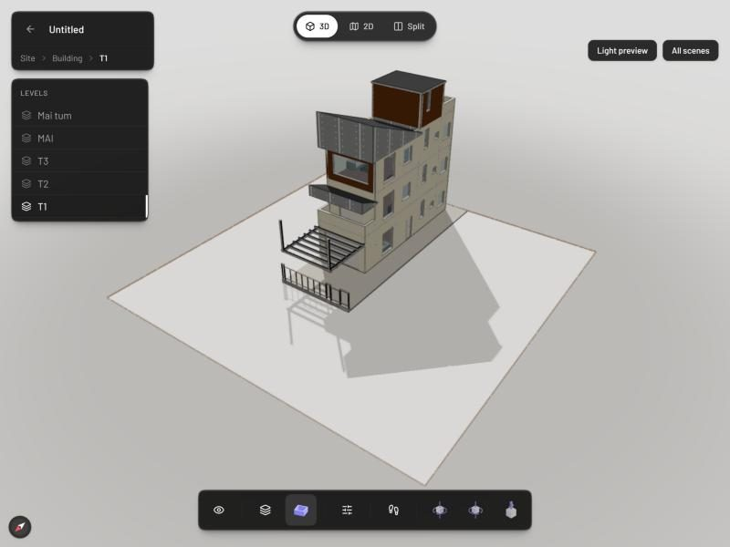

Lập một đội agent biết chia việc, bàn giao, soát chéo. Cài markitdown, Pascal, MotionFly chỉ bằng prompt.
Chia vai rõ. Bàn giao bằng file. Người ký vẫn là kỹ sư.
Khóa AI Agent trong Kỹ thuật & Xây dựng · CES Global
Sau buổi này anh chị làm được
Thiết kế một đội agent: mỗi thành viên một vai, một model, một mức suy luận.
Cho đội chạy trên Claude Code: ai làm song song, ai chờ ai, bàn giao bằng file.
Cài 3 công cụ bằng prompt: markitdown, Pascal Editor, MotionFly.
Làm video giới thiệu công trình từ bản vẽ và ảnh render.
01
Đội AI Agent
Tổ chức như một công trường thu nhỏ
Vì sao cần đội
Một agent ôm hết việc thì đầy trí nhớ và tự chấm bài mình.
Chia ra nhiều agent: mỗi người đọc ít hơn, làm kỹ hơn, và có người thứ ba soát chéo.
Đội agent giống tổ chức công trường
Công trường
Chỉ huy trưởng
= Agent chính
Nhận việc từ anh chị, chia việc, gộp kết quả.
Công trường
Tổ chuyên môn
= Subagent
Kiến trúc, bóc khối lượng: mỗi tổ một việc.
Công trường
Giám sát
= Agent kiểm tra
Chỉ đọc, không sửa, kết luận ĐẠT hay CẦN SỬA.
Công trường
Biên bản bàn giao
= File handoff
Ai làm xong ghi lại để người sau đọc.
Một dự án nhà phố thật cần bao nhiêu agent?
1
Tiếp nhận yêu cầu
Phiếu yêu cầu, câu hỏi khách
sonnet
2
Kiến trúc
Vẽ AutoCAD qua MCP
opus
3
Kết cấu
Móng, dầm, sàn, thép
opus
4
Điện nước
Mặt bằng ME
sonnet
5
Dựng 3D
Blender, Pascal từ file mô tả
sonnet
6
Render
Đổi phong cách qua ChatGPT MCP
sonnet
7
Bóc khối lượng
Từ bản vẽ, có diễn giải
sonnet
8
Dự toán, báo giá
Giá theo công bố giá Sở XD
sonnet
9
Kiểm soát hồ sơ
Chỉ đọc, soát chéo cả bộ
sonnet · high
10
Hồ sơ gửi khách
PDF, video MotionFly, thư nháp
sonnet
Không bật cả 10 cùng lúc: chạy theo từng chặng. Người duyệt ở 3 chỗ đắt tiền: khách chốt phương án, kỹ sư ký bản vẽ, người bấm gửi.
Điều quan trọng nhất
Mỗi agent ngồi một phòng riêng, không nghe cuộc trò chuyện của anh chị.
Nó chỉ biết CLAUDE.md, skill, MCP và lời giao việc. Muốn nó biết gì thì ghi vào lời giao việc hoặc vào file.
CLAUDE.md gọn nhẹ: tách luật ra .claude/rules/
du-an-nha-pho\
├── CLAUDE.mdngắn: dự án là gì
└── .claude\
└── rules\
├── so-lieu.md luôn nạp
├── ban-giao.md paths: handoff/**
└── autocad.md paths: **/*.dwg~/.claude/rules/luật chung mọi dự án
Nạp vào lúc nào
CLAUDE.md và rules không ghi paths: nạp ngay khi mở phiên
Rules có paths: chỉ nạp khi Claude đọc, sửa file khớp
@import chỉ cho gọn mắt, vẫn nạp từ đầu
Nên giữ mỗi CLAUDE.md dưới 200 dòng
Nguồn: code.claude.com/docs/en/memory, mục Organize rules with .claude/rules/.
MCP cài ở dự án hay Global?
Phạm vi
Lưu ở đâu
Dùng được ở
Hợp với
local (mặc định)
~/.claude.json, theo dự án
Chỉ dự án này, chỉ mình anh chị
Thử MCP mới
project
.mcp.json ở thư mục dự án
Dự án này, chia sẻ cho cả nhóm
MCP riêng của một công trình
user (Global)
~/.claude.json
Mọi dự án trên máy
AutoCAD, Blender, ChatGPT ảnh
Trùng tên: local thắng project, project thắng user.
MCP kết nối khi mở phiên; công cụ của nó được tìm khi cần (tool search, mặc định bật) nên không nhồi hết vào ngữ cảnh.
MCP ở project: Claude hỏi anh chị duyệt trước khi dùng lần đầu.
File .md là lời dặn cho Claude đọc; file .json là sổ đăng ký kết nối MCP, Claude Code tự ghi. Nguồn: code.claude.com/docs/en/mcp.
Prompt: dọn CLAUDE.md và cài MCP đúng chỗ
CLAUDE.md của dự án này đang dài. Sao lưu bản cũ vào _backup, rồi giữ lại phần mô tả dự án, tách các quy tắc ra .claude/rules/: so-lieu.md (luôn áp dụng), ban-giao.md chỉ áp dụng cho thư mục handoff (dùng paths). Đọc lại cho tôi kiểm.
Kiểm tra các MCP đang cài trên máy tôi và cho biết mỗi cái đang ở phạm vi local, project hay user. MCP AutoCAD tôi dùng cho mọi công trình: chuyển sang phạm vi user. Báo lại trước khi đổi.
Luật chung, dùng mọi nơi: rules không paths
Luật cho một loại file: rules có paths
MCP dùng mọi dự án: phạm vi user
Mỗi thành viên phải định bốn thứ
1Nhiệm vụ
Một vai, một đầu ra rõ, không chồng việc người khác.
description: ...
2Model
Chọn theo độ khó của việc, không chọn theo thói quen.
model: sonnet
3Mức suy luận
Nghĩ nhiều hay nghĩ nhanh: low, medium, high, xhigh, max.
effort: high
4Quyền
Người soát chỉ được đọc, không được sửa file.
tools: Read, Glob, Grep
Nguồn: code.claude.com/docs/en/sub-agents (các trường name, description, tools, model, effort).
Việc nào dùng model nào
Vai trong đội
Việc
Model
Mức suy luận
Kiến trúc sư
Đọc bản vẽ, lập bảng thông số, đề xuất phương án
opus
high
Kỹ sư bóc khối lượng
Tính theo kích thước, có diễn giải, ra Excel
sonnet
high
Kỹ sư kiểm tra
Soát chéo phương pháp, chỗ sót, chỗ trừ hai lần
sonnet
high
Thư ký
Đổi tên file, gom danh sách, tóm tắt ngắn
haiku
low
Việc khó, cần lập luận: model mạnh. Việc lặp lại, khối lượng lớn: model nhẹ cho đỡ tốn.
Lập đội trong 5 bước
Vẽ sơ đồ đội: ai làm gì, ai chờ ai
Tạo file cho từng agent bằng một prompt
Quy định file bàn giao
Giao việc cho cả đội
Soát và gộp trước khi dùng
Bước 1. Vẽ sơ đồ đội trước khi gõ prompt
Agent chính
Viết phiếu giao việc, chia việc, gộp báo cáo
kien-truc
Bảng thông số, danh sách phòng
boc-kl
Bóc khối lượng phần thô ra Excel
Song song
kiem-tra
Chỉ đọc, soát chéo bóc khối lượng
Chờ boc-kl xong mới chạy
Việc không phụ thuộc nhau thì cho chạy song song.
Bước 2. Tạo file cho từng agent
Trong dự án hiện tại, tạo 3 file agent trong .claude/agents/ theo chuẩn subagent của Claude Code (name, description, tools, model, effort): kien-truc-su (opus, high), ky-su-boc-khoi-luong (sonnet, high), ky-su-kiem-tra (sonnet, high, chỉ đọc). Mỗi agent ghi kết quả vào handoff/NN_ten.md theo mẫu chung. Không bịa số liệu. Tạo xong đọc lại cho tôi kiểm.
---name: ky-su-kiem-tra
description: Soát chéo bảng
bóc khối lượng, chỉ đọc
tools: Read, Glob, Grep
model: sonnet
effort: high
---
Bạn là kỹ sư QS khó tính.
Ghi handoff/03_kiem-tra.md.
Dòng đầu: Kết luận ĐẠT
hoặc CẦN SỬA.
Tạo xong mở cuộc trò chuyện mới để Claude nhận agent.
Mỗi agent chỉ sửa file của mình: hai agent cùng sửa một file sẽ ghi đè nhau.
Bước 4. Giao việc cho cả đội
Lập đội 3 agent cho hồ sơ nhà phố trong thư mục này. Viết 00_phieu-giao-viec.md trước. Đặt tên "kien-truc" (agent kien-truc-su) và "boc-kl" (agent ky-su-boc-khoi-luong), cho chạy song song, mỗi người chỉ sửa file của mình. Hai người xong mới chạy "kiem-tra" (agent ky-su-kiem-tra). Mỗi agent ghi handoff/NN_ten.md. Cuối cùng gộp vào 99_bao-cao-tong-hop.md.
Đã viết phiếu giao việc.
kien-truc và boc-kl đang chạy song song.
kiem-tra chờ 2 file bàn giao.
Gọi đúng tên agent đã tạo
Nói rõ ai song song, ai chờ
Nói rõ file đầu ra
Đặt tên để các agent nhắn được cho nhau
Khung trả lời là ví dụ minh họa.
Bước 5. Soát và gộp trước khi dùng
Mở từng file bàn giao: đủ đầu vào, đầu ra, giả định, chỗ chưa chắc chưa?
Đọc kết luận kiểm tra: CẦN SỬA thì giao lại đúng agent đã làm.
Đối chiếu số với bản vẽ: không tin số chỉ vì AI viết ra.
Ghi lại kinh nghiệm vào file agent cho lần sau.
Bốn lỗi hay gặp và cách sửa
Không thấy agent vừa tạo: mở cuộc trò chuyện mới.
Hai agent ghi đè file nhau: chia mỗi người một file riêng.
Agent bịa số: ghi luật "không có trong tài liệu thì ghi Tài liệu không đề cập".
Tốn token: việc nhẹ dùng sonnet hoặc haiku, đội 3 người là đủ.
Demo tối nay: 4 agent trình phương án cho khách
Agent chính
Phiếu giao việc, gộp báo cáo, thư nháp gửi khách
tiep-nhan
Yêu cầu khách khớp bản vẽ chưa
kien-truc
Thuyết minh phương án từng tầng
khoi-luong
Khối lượng phần thô sơ bộ
kiem-tra
Chỉ đọc, soát chéo 3 file bàn giao
Chờ 3 agent xong
Khách muốn 3 phòng ngủ, bản vẽ có 2: agent tiếp nhận phải bắt được trước khi trình khách.
Khoảng 10 phút. Về nhà thay bằng căn nhà của chính mình.
Prompt chạy demo đội 4 agent
Lập đội agent cho hồ sơ trình khách nhà phố trong thư mục này. (0) Chuyển 00_yeu-cau-khach-hang.docx sang .md bằng markitdown. (1) Viết 00_phieu-giao-viec.md. (2) Chạy song song "tiep-nhan", "kien-truc", "khoi-luong" (đúng agent đã tạo), mỗi agent chỉ ghi handoff của mình. (3) Ba agent xong mới chạy "kiem-tra", ghi handoff/04_kiem-tra.md. (4) CẦN SỬA thì giao lại đúng agent, tối đa 1 vòng. (5) Gộp 99_bao-cao-tong-hop.md kèm thư nháp gửi khách, chưa gửi.
Bản đầy đủ: 01_prompt-chay-doi.md
Xem handoff\ có file mới lần lượt
Chờ xem agent tiếp nhận bắt lỗi 3 phòng ngủ
02
Bộ đồ nghề cài bằng prompt
markitdown, Pascal Editor, MotionFly
Một prompt cài đặt tốt có 4 phần
Nguồn: link repo hoặc tên gói chính thức.
Trình độ: "tôi không rành terminal, hướng dẫn từng bước".
Giới hạn: "không cài thêm gì ngoài README yêu cầu".
Bằng chứng: "cài xong chạy thử và báo kết quả".
markitdown: hợp đồng, hồ sơ thành chữ cho AI
Cài công cụ markitdown của Microsoft cho tôi (gói 'markitdown[all]', đọc được PDF, Word, Excel, PowerPoint). Máy chưa có Python thì hướng dẫn tôi từng bước, tôi không rành terminal. Cài xong chuyển thử một file PDF trong thư mục này sang .md và báo kết quả.
Mở CLAUDE.md Global của tôi, sao lưu bản cũ trước, thêm mục: khi tôi đưa .pdf, .docx, .xlsx thì tự chuyển sang .md bằng markitdown, lưu cùng thư mục, mở ra kiểm. File .md gần như trống thì báo tôi đó là PDF scan.
Bảng, điều khoản đọc chính xác hơn
Tốn ít token hơn đọc PDF
Ghi vào Global: mọi dự án đều tự làm
Nguồn: README microsoft/markitdown.

Pascal Editor
Dựng 3D nhanh trên trình duyệt
Mã nguồn mở, dựng theo tường, cửa, sàn, thang, mái
Cắt tầng, bung tầng để kỹ sư xem
Nối với Claude qua MCP: Claude dựng thay mình
Nhà phố 7x20m dựng trong Pascal Editor (repo pascalorg/editor)
Pascal: cài, nối MCP, dựng nhà
Cài Pascal Editor từ repo https://github.com/pascalorg/editor cho tôi. Đọc README trước, chọn cách cài không cần tải mã nguồn (gói npm @pascal-app/cli). Máy chưa có Node.js thì hướng dẫn tôi từng bước. Cài xong mở Pascal lên, rồi nối Pascal với Claude Code qua MCP theo README và kiểm tra kết nối.
Dùng Pascal dựng lại ngôi nhà theo file mô tả bản vẽ trong thư mục này (đơn vị mét): từng tầng, cửa, cầu thang, mái, sân. Chụp góc 3/4 và góc bung tầng. Bản vẽ không có thì ghi "Tài liệu không đề cập".
Prompt 1: cài và nối MCP
Prompt 2: dựng từ file mô tả bản vẽ
Xem nhanh, không thay ảnh gửi khách
Nguồn: README pascalorg/editor.
MotionFly làm video như một đoàn làm phim
1
Kịch bản
Lời đọc từng cảnh, số liệu lấy từ bản vẽ
2
Giọng đọc
Giọng Việt chạy trên máy, miễn phí
3
Phân cảnh
Hình xuất hiện đúng lúc đọc tới chữ đó
4
Dựng hình
Bản vẽ, ảnh 3D, chữ, nhạc nền
5
Xuất MP4
Kèm phụ đề, đúng chuẩn âm lượng
Anh chị duyệt kịch bản
Anh chị duyệt tờ ảnh khung hình
MotionFly: cài và làm video bằng prompt
Cài plugin MotionFly cho Claude Code của tôi từ repo https://github.com/andyluu98/MotionFly theo đúng hướng dẫn trong README. Cài xong kiểm tra máy còn thiếu gì (Node.js, ffmpeg, giọng đọc) và cài giúp tôi, tôi không rành terminal. Xong báo tôi khi máy đã sẵn sàng.
Dùng MotionFly làm video khoảng 1 phút giới thiệu công trình nhà phố của tôi để thuyết trình cho chủ nhà, khung 16:9, style dark-keynote. Tư liệu: bản vẽ PDF và ảnh render trong thư mục này. Số liệu chỉ lấy từ bản vẽ. Cho tôi duyệt kịch bản trước, rồi duyệt tờ ảnh khung hình, rồi mới xuất MP4.